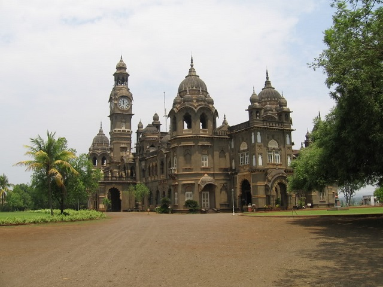
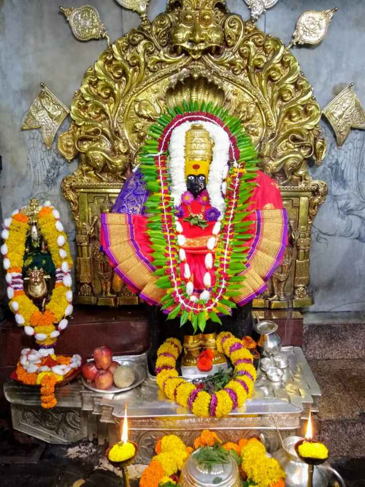
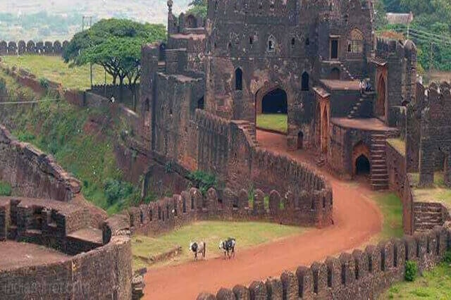

Brief History about Kolhapur city
Kolhapur is one of the oldest civilizations of the country. Kolhapur’s cultural history is dated back to 17th Century. Situated at the banks of River Panchganga, Kolhapur is called as DAKSHIN KASHI (Kashi is a holy city in Northen India and Dakhin means South) for its spiritual history. India’s pre-independence history is in fact, history of kings and their kingdoms. Kolhapur is not different from the others, it has also seen and gone under the various regimes and since the emergence of the Marathas, the place was being ruled by the Bhonsle dynasty.
-

New Palace
One of the top tourist attractions in Kolhapur city in the state of Maharashtra is New Palace.The construction of the New Palace is done in black stones and dates back to 1877–1884.The New Palace is situated in a wide area and consists of garden, zoo, museum, lake and wrestling ground.This is a must place to see if you ever visit Kolhapur.
-

Shri Mahalakshmi Temple
The main temple to visit during your Kolhapur city visit is Shri Mahalakshmi Temple. The temple is also called Ambabai temple or Karverrnivashini temple.The construction history of Shri Mahalakshmi temple is very old.
-

Panhala Fort
Panhala fort (also known as Panhalgad and Panhalla (literally "the home of serpents")), is located in Panhala, 20 kilometres northwest of Kolhapur in Maharashtra, India. It is strategically located looking over a pass in the Sahyadri mountain range which was a major trade route from Bijapur in the interior of Maharashtra to the coastal areas.
-

Rankala Lake
Rankala Lake is on the western side of Ambabai temple , it is a popular evening spot and recreation centre. This lake was constructed by late Maharajah, Shri Shahu Chhatrapati. The Lake is surrounded by Chaupati and other gardens.
City Famous for
The city is famous of Kolhapur SAAJ (necklace with traditional pattern), jaggery ,Kolhapur chappal (traditional leather sandal) and wrestling. Kolhapur is also famous for it non-veg food recipes (Marathi: Kolhapuri pandhara rassa, tambadaa rassa) and unique spices.